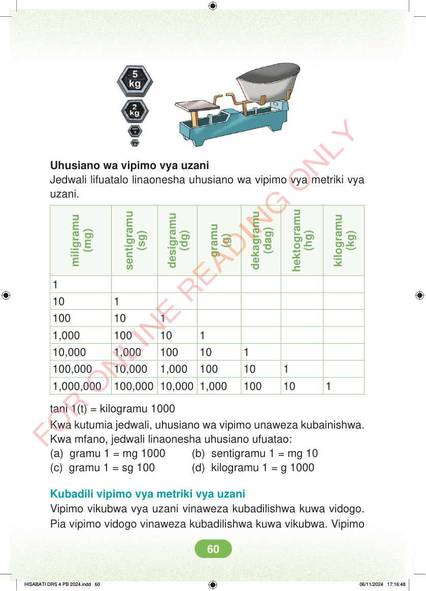

Uhusiano wa vipimo vya uzani Jedwali lifuatalo linaonesha uhusiano wa vipimo vya metriki vya uzani. (g) (kg) (sg) (hg) (dg) (mg) (dag) gramu kilogramu miligramu desigramu dekagramu sentigramu hektogramu 10 1 100 10 1 1,000 100 10 1 10,000 1,000 100 10 1 100,000 10,000 1,000 100 10 1 1,000,000 100,000 10,000 1,000 100 10 1 tani 1(t) = kilogramu 1000 Kwa kutumia jedwali, uhusiano wa vipimo unaweza kubainishwa. Kwa mfano, jedwali linaonesha uhusiano ufuatao: (a) gramu 1 = mg 1000 (b) sentigramu 1 = mg 10 (c) gramu 1 = sg 100 (d) kilogramu 1 = g 1000 Kubadili vipimo vya metriki vya uzani Vipimo vikubwa vya uzani vinaweza kubadilishwa kuwa vidogo. Pia vipimo vidogo vinaweza kubadilishwa kuwa vikubwa. Vipimo HISABATI DRS 4 PB 2024.indd 60 HISABATI DRS 4 PB 2024.indd 60 06/11/2024 17:16:48 06/11/2024 17:16:48